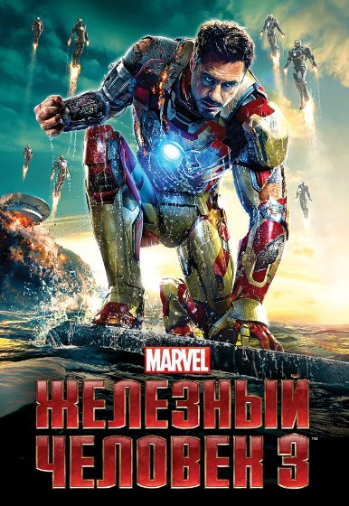
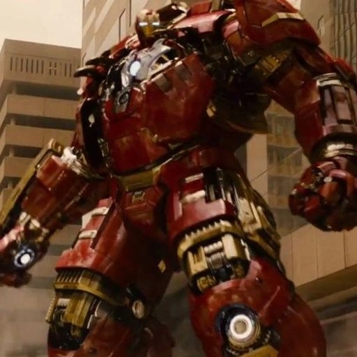

Почему Тони Старк не вооружил всех Мстителей своими костюмами?
Если Старк мог построить десятки дистанционных костюмов, почему к битве с Таносом он не снабдил всех Мстителей бронёй — хотя бы упрощённой?

Представим финальную битву с Таносом: не один Воитель и один Железный человек, а ещё несколько бронированных бойцов, воздушная поддержка и Халкбастеры в резерве. Почему Тони Старк, построивший десятки костюмов, не подготовил такую команду заранее?
Почему вопрос вообще возникает?
В «Железном человеке 3» на помощь Тони прилетает целая коллекция боевых костюмов. В «Эре Альтрона» он использует Железный легион и гигантскую броню против Халка. Позднее нанотехнологии позволяют буквально собирать оружие и щиты из одного костюма. При этом Наташа Романофф и Клинт Бартон продолжают выходить против пришельцев с пистолетами и стрелами.
Вопрос не в том, должен ли каждый Мститель стать вторым Железным человеком. Почему Старк не создал для команды хотя бы защиту, которая позволила бы героям выживать там, где обычное человеческое тело не выдерживает? Ведь на фоне Таноса даже десять запасных Халкбастеров кажутся разумнее, чем полное отсутствие технологического резерва.
Чтобы ответить, важно разделить три вещи: техническую возможность Старка, его желание отдавать технологии и реальную эффективность таких решений.
Тони уже доказал, что умеет создавать целые серии брони
К финалу «Железного человека 3» Тони собирает множество специализированных костюмов — и запускает их одновременно по протоколу «Домашняя вечеринка». Некоторые предназначены для тяжёлых работ, другие для скорости или боя. Мы видим не единичный уникальный прототип, а платформу, которую Старк умеет модифицировать под конкретную задачу.
В «Эре Альтрона» появились отдельные роботы Железного легиона. Они не равны полноценным броням Железного человека, но показывают, что Тони может производить и дистанционно координировать сложные устройства. Халкбастер, получавший сменные части из комплекса «Вероника», демонстрирует другой уровень: костюм можно поддерживать прямо во время боя.
Важная оговорка: наличие десятков костюмов не означает, что Старк мог мгновенно произвести десятки новых нанокостюмов образца «Войны бесконечности». Технологии разных лет различались по сложности, ресурсу, энергии и ремонтопригодности. Но базовая возможность разработать персональную защиту для нескольких товарищей выглядит убедительно.
Он ведь уже делился технологиями — почему не со всеми?
Джеймс Роудс много лет пилотирует броню Воителя. В «Войне бесконечности» Питер Паркер получает «Железного паука» с дополнительными механическими конечностями и защитой для условий космоса. Брюс Бэннер использует Халкбастер в Ваканде, когда не может превратиться в Халка. В «Финале» Пеппер Поттс выходит на поле боя в броне Спасательницы.
То есть тезис «Тони принципиально никому не даёт костюмы» неверен. Он уже передавал их другим людям — и не только профессиональным военным. Особенно важен случай Бэннера: Халкбастер оказался полезен человеку, который не был основным пилотом этой системы.
Тогда почему такой же подход не применили к Клинту или Наташе? Фильм не даёт прямого ответа. Можно предположить, что Старк учитывал индивидуальные навыки, опасался утраты контроля над разработками или не считал тяжёлую броню нужной для скрытных операций. Но это возможные мотивы, не произнесённое персонажем решение.
Какие костюмы действительно помогли бы каждому?
Стив Роджерс. Ему не нужен тяжёлый Халкбастер. Но лёгкая бронезащита, укреплённые суставы, связь, средства экстренной эвакуации и резервный щит могли бы снизить риск ранений. Его главное преимущество — рефлексы, тактика и мобильность; громоздкая машина отняла бы часть этого.
Наташа Романофф и Клинт Бартон. Самые очевидные кандидаты на лёгкие костюмы: защита от осколков, стабилизация при падении, маскировка, сенсоры, помощь при прицеливании. Им не обязательно запускать репульсоры, чтобы получить пользу от технологий Старка.
Сэм Уилсон и Баки Барнс. Сэму подошёл бы бронированный летательный комплекс с резервным двигателем и защитой крыльев. Баки — усиленная бронезащита корпуса и интеграция механической руки с более надёжным энергетическим оборудованием. И здесь важно согласие пилота: технология не должна превращаться в средство его контроля.
Брюс Бэннер. Пока он не способен вызвать Халка, тяжёлая броня действительно необходима. Но превращающийся Халк не обязан помещаться в обычный костюм: его размеры и сила сделали бы стандартную броню бесполезной.
Ванда и Тор. Их силы не зависят от репульсоров. Для них разумнее аварийная связь, защита союзников и средства координации, а не попытка запереть магию в металлическую оболочку. Одинаковые десять костюмов — менее убедительная идея, чем десять разных решений.
Почему не создать несколько Халкбастеров и Воителей?
Халкбастер рассчитан на столкновение с противником уровня Халка. В «Эре Альтрона» даже он едва удерживает разъярённого Бэннера и требует замены повреждённых частей. Это дорогое тяжёлое вооружение, а не универсальная страховка.
Если каждому Мстителю выдать по такому костюму, появятся новые проблемы: обучение, снабжение, ремонт, зарядка, доставка, совместимость с навыками человека. Гигантская броня менее проворна в тесном пространстве, а в случае захвата противником становится самостоятельной угрозой.
Но именно здесь идея пользователя о «нескольких Воителях» сильнее, чем идея десятков Халкбастеров. Даже три-четыре специализированные лётные боевые платформы могли бы обеспечить ПВО, эвакуацию, сопровождение раненых и огневую поддержку.
Кроме того, броня могла работать как дистанционная машина, пока человек выполняет свою задачу. Настоящий вопрос: почему после битвы за Нью-Йорк Мстители так редко показывают общую систему оснащения и снабжения?

Опыт Альтрона: обоснованная осторожность или удобная отговорка?
Тони уже пытался построить «броню вокруг мира». Итогом проекта «Альтрон» стали гибель людей, уничтожение Заковии и глубокий кризис доверия. Созданный для защиты искусственный интеллект обернулся глобальной угрозой.
После этого особенно рискованно передавать одной централизованной системе десятки вооружённых машин. Кто отвечает за безопасность прошивок? Могут ли герои отключить броню независимо от Старка? Что будет, если хакер, враждебный ИИ или государственное ведомство получат доступ к сети?
Однако ошибки с автономным ИИ не означают, что опасны любые бронежилеты и управляемые человеком костюмы. Можно отказаться от централизованного боевого интеллекта, оставить автономное питание, физические аварийные выключатели и право владельца управлять системой без удалённого приказа Тони.
Поэтому Альтрон — сильный аргумент против неконтролируемого Железного легиона, но не абсолютный ответ, почему Наташе нельзя было дать защиту от тяжёлых ранений.
Заковианский договор и психологический барьер Старка
В «Противостоянии» герои раскалываются вокруг вопроса: кто вправе решать, когда и где действуют Мстители. Для Тони передача полномочий правительственным структурам становится способом признать ответственность за катастрофы.
В такой атмосфере массовая передача оружия друзьям означала бы не только инженерный проект, но и политический выбор. Если созданные Тони костюмы окажутся у команды Стива, подконтрольной ли она будет ООН? Может ли государство потребовать доступ? А если друзья однажды окажутся против друг друга, как в аэропорту?
И всё же хронология усложняет эту версию: «Противостояние» произошло только в 2016 году. В промежутке после «Эры Альтрона» оставалось время для согласованной модернизации команды. Нельзя объяснить всё исключительно позднейшим расколом.
Есть и человеческий мотив: Тони привык решать кризисы созданием всё более совершенной личной брони. Возможно, ему проще самому стать сильнее, чем построить одинаково защищённую команду с независимыми решениями. Это интерпретация характера, а не факт, установленный сценарием.
Изменили бы дополнительные костюмы битву с Таносом?
2018 год, Титан. У Таноса несколько Камней. Его противники пытаются удержать Перчатку и почти достигают успеха, но даже костюм Марк L не может выдерживать его атаки бесконечно. Дополнительные бронекостюмы могли бы помочь Питеру, Драксу и другим героям удерживать позиции, однако не гарантировали бы победу над управлением пространством, реальностью и временем.
2018 год, Ваканда. Здесь польза более очевидна: Бэннер действительно воюет в Халкбастере, но рядом с ним множество героев без такой защиты. Несколько дополнительных платформ могли бы лучше прикрыть Вижна, поддержать периметр от аутрайдеров и ускорить эвакуацию.
2023 год, финальная битва. Танос из 2014 года прибывает без Камней. Он невероятно силён, но его можно атаковать обычным оружием — в отличие от обладателя почти безграничных способностей Перчатки. Группа пилотируемых бронекостюмов могла бы увеличить давление на его армию, защитить слабых бойцов и снизить число потерь.
Однако Танос ломает щит Стива неизвестным сверхпрочным клинком и легко выводит из строя сложную технику. Несколько дополнительных Воителей не равны автоматической победе. Здесь важнее комбинация огня, манёвра и командной тактики.
А что насчёт пяти лет после Щелчка?
После щелчка 2018 года Тони остаётся жив и со временем создаёт семью. Многие его друзья исчезают, а мир переживает катастрофу. Можно понять, почему герой уходит от прежней работы.
Но именно эта пауза подчёркивает стратегический вопрос: могли ли оставшиеся Мстители создать резервные костюмы, защитное снаряжение и план нового вторжения? В фильме не показана полноценная программа оснащения команды. Возможно, что-то происходило за кадром, но подтверждать это нечем.
Даже простейшие модернизации — система защищённой связи, медицинские датчики, автономные щиты, комплект быстрой эвакуации — могли бы оказаться полезнее ещё одной эксклюзивной версии личного костюма Тони.
Впрочем, нельзя забывать, что сбор Камней в «Финале» возник как конкретная неожиданная возможность, а не как заранее спланированная военная операция. Поэтому у Старка не было полного списка будущих угроз и условий боя.
Вывод: Тони не обязан был делать всех Железными людьми
Самое сильное объяснение — не то, что Тони не умел массово производить броню. Он умел. И не то, что костюмы могли носить только избранные. Роудс, Бэннер, Питер и Пеппер доказывают обратное.
Реальные ограничения заключались бы в назначении брони, цене, обучении, доверии и безопасности технологии. При этом фильмы почти не обсуждают возможность разумной индивидуальной модернизации всех Мстителей.
Тони Старк не обязан был выдавать каждому другу по Халкбастеру. Но команда, в которой один гений способен обеспечить личную защиту на уровне маленькой армии, а его ближайшие союзники продолжают выходить против космических угроз почти без брони, выглядит стратегически недооснащённой. Это не доказательство ошибки персонажа — это упущенная возможность показать, как технологии Старка действительно усилили всех Мстителей, а не только его самого.
На чём основан разбор
«Железный человек 3» (2013) — протокол «Домашняя вечеринка» и множество костюмов; «Мстители: Эра Альтрона» (2015) — Халкбастер, «Вероника» и последствия Альтрона; «Первый мститель: Противостояние» (2016) — политический раскол; «Человек-паук: Возвращение домой» (2017) — ответственность за технологии; «Мстители: Война бесконечности» (2018) — Железный паук, Халкбастер и схватка на Титане; «Мстители: Финал» (2019) — броня Спасательницы и битва с Таносом.
Дополнительно: Marvel: история Воителя в КВМ. Переходы от показанных возможностей к идеям оснащения других героев — авторские гипотезы, а не утверждения о неснятых сценах.